Nova Forja
O novo ciclo de progressão foi ativado: desbloqueio da Oficina, fabricação épica, refino +0 → +10, têmpera em combate e evolução 50 → 60.
- 3 conhecimentos restauram 4 acessos.
- O terceiro conhecimento fecha a cadeia de abertura.
Boas-vindas à atualização A Oficina Desperta! A Oficina abre suas portas, três minichefes raros surgem pela campanha e Kael, Aelia, Mira e Fae entram em combate com animações renovadas. Chegou a hora de coletar materiais, fabricar equipamentos épicos e descobrir até onde sua equipe consegue evoluir.
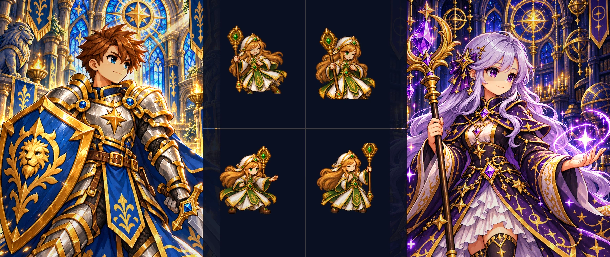
O novo ciclo de progressão foi ativado: desbloqueio da Oficina, fabricação épica, refino +0 → +10, têmpera em combate e evolução 50 → 60.
Kael, Aelia e Mira ganharam novos movimentos. Fae entra no grupo com 60 desenhos inéditos, enquanto Nymeris recebe um pequeno ajuste de proporção visual.
Matriarca, Espreita e Cadinho Vivo entram no fluxo da campanha com identidade própria e materiais exclusivos para abastecer a Nova Forja.
Os antigos conhecimentos retornaram aos três mundos. Reúna as relíquias para restaurar a Oficina e liberar a fabricação de equipamentos épicos, o refino, a têmpera em combate e a evolução do nível 50 para o 60.
Os conhecimentos I e II podem surgir em qualquer ordem. Enquanto faltar uma das três relíquias, todos os ofícios permanecem selados. Após obter as duas primeiras, a primeira vitória especial contra o Cadinho Vivo garante o conhecimento III e restaura a Oficina automaticamente.
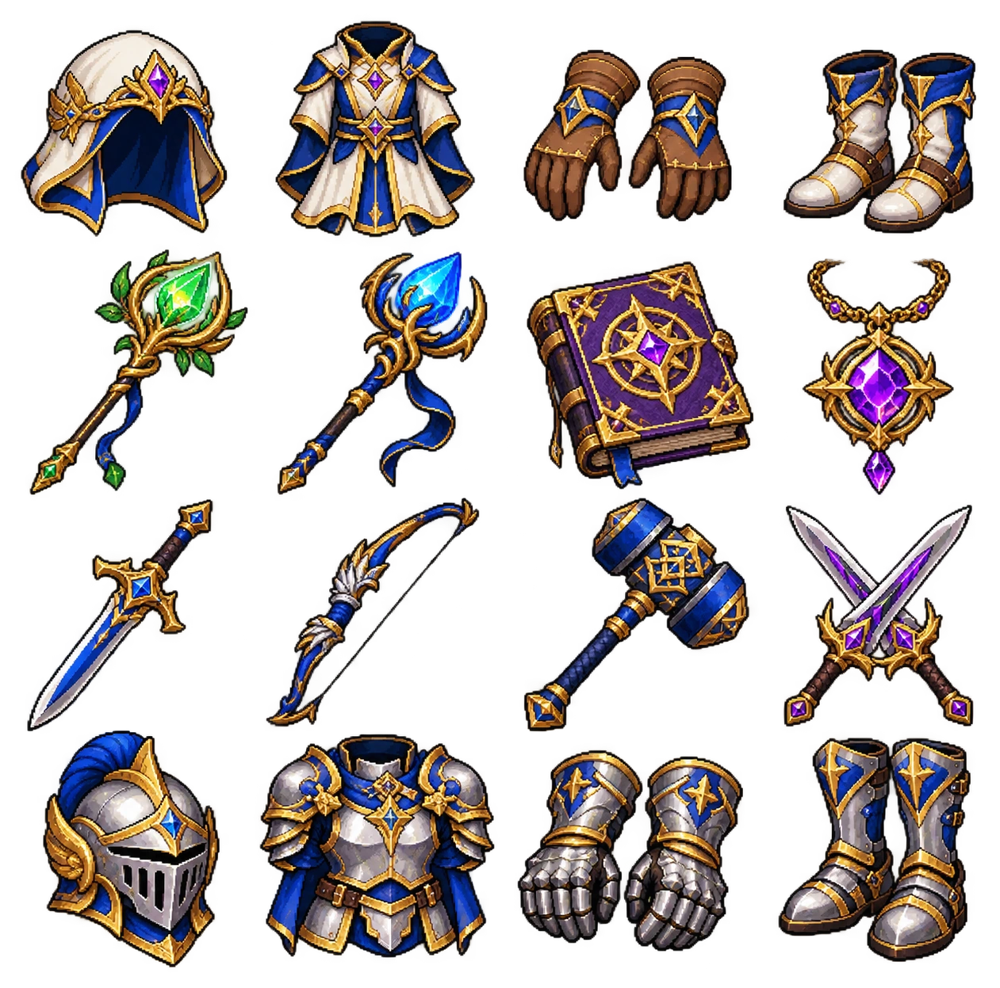
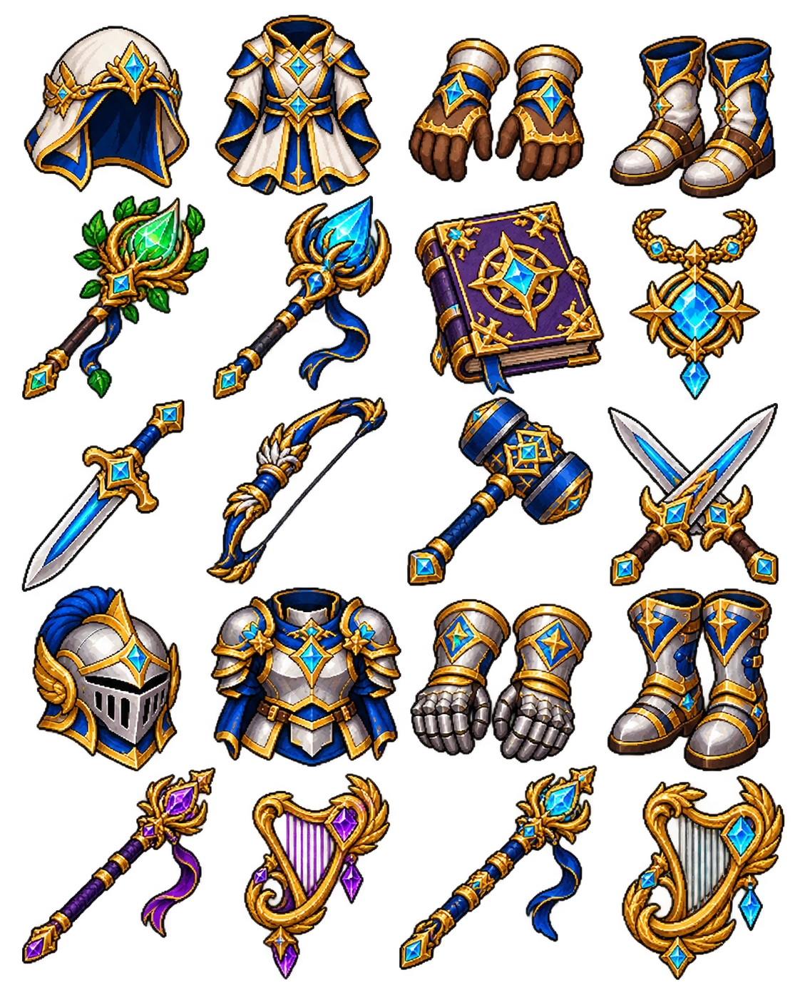
O item é criado apenas quando receita, materiais, compatibilidade, extras e espaço de inventário estão válidos.
O primeiro refino é imediato e tem 100% de sucesso por 5.000 de ouro. Os demais dependem de têmpera concluída.
O progresso da barra acontece em combate real com a peça equipada, a partir da fase 401.
O item 50 evolui para 60 mantendo a própria identidade, extras, refino e histórico.
Fae recebe uma reformulação completa das animações. Kael, Aelia e Mira também ganharam novos corpos e movimentos, enquanto Nymeris recebeu um ajuste visual de altura. As habilidades e seus valores não mudaram nesta atualização visual.
As reformulações de vanguarda, suporte e magia também estão presentes nesta atualização.
Nymeris ficou 5% mais alta, preservando a largura anterior e a identidade da personagem. O ajuste não altera suas habilidades, atributos, servos nem velocidade de combate.
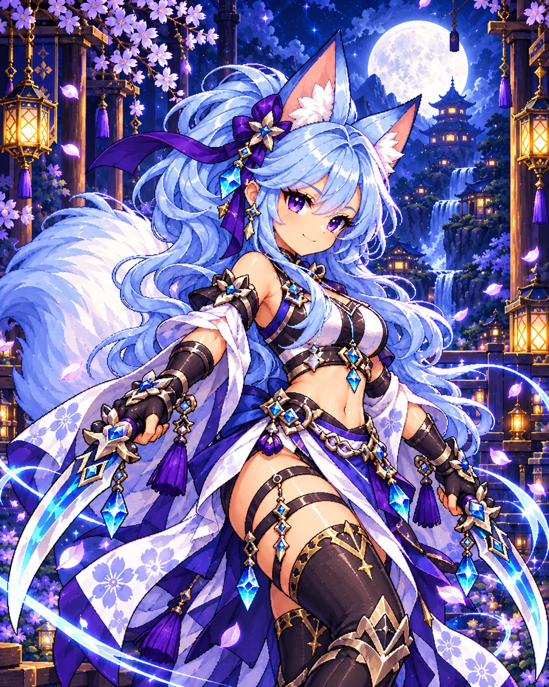
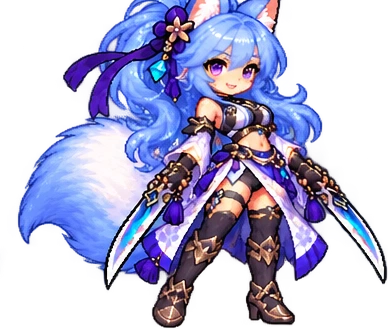
FAE · A DANÇA DAS LÂMINASFae está de visual renovado! Seus novos movimentos valorizam o cabelo azul, as orelhas e a cauda de raposa, além das duas lâminas que definem seu estilo de combate.
São 60 novos desenhos, com golpes mais distintos, expressões aprimoradas e transições de movimento que dão mais personalidade a cada ataque.
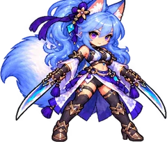
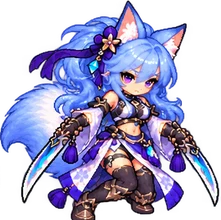
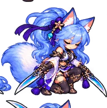
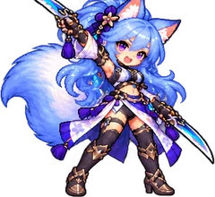
Habilidades preservadas: Corte Crescente, Pétalas de Aço, Passo da Raposa e Valsa receberam novos movimentos, sem mudança de dano, recarga, velocidade ou efeitos.
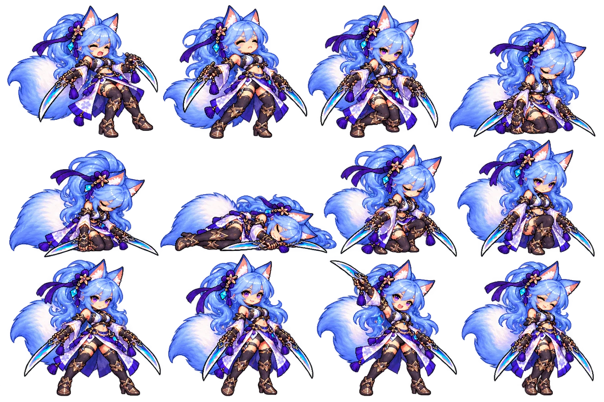
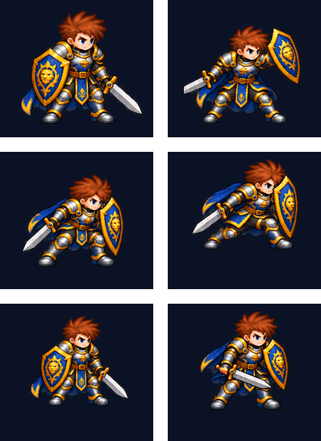
Kael assume uma postura de guarda mais firme, com espada e escudo mais nítidos. Corridas, cortes e investidas ganham movimentos próprios, reforçando sua presença na linha de frente.
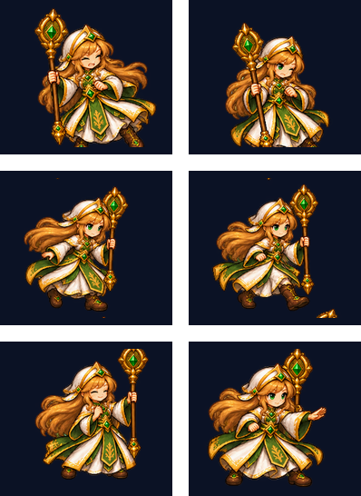
Aelia recebeu gestos próprios para cura, purificação, santuário e Ressurreição. Seus novos movimentos tornam mais fácil distinguir cada feitiço e acompanhar o momento da recuperação dos aliados.
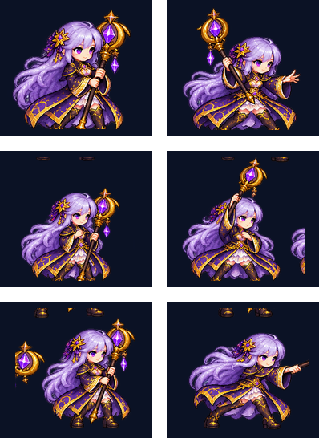
Mira ganhou novas poses para raio, selo e véu. O cajado lunar e os movimentos de conjuração estão mais nítidos, com efeitos breves que acompanham o impacto dos ataques.
A Oficina reúne 36 receitas épicas distribuídas por 18 famílias, nos níveis 50 e 60. Armas, proteções e acessórios oferecem combinações de atributos para adaptar o equipamento ao papel de cada herói.
As receitas incluem armas físicas e mágicas, armaduras, vestes, elmos, botas, luvas, acessórios e instrumentos. Cada família possui requisitos e combinações de atributos próprios, com opções compatíveis com os nove heróis.
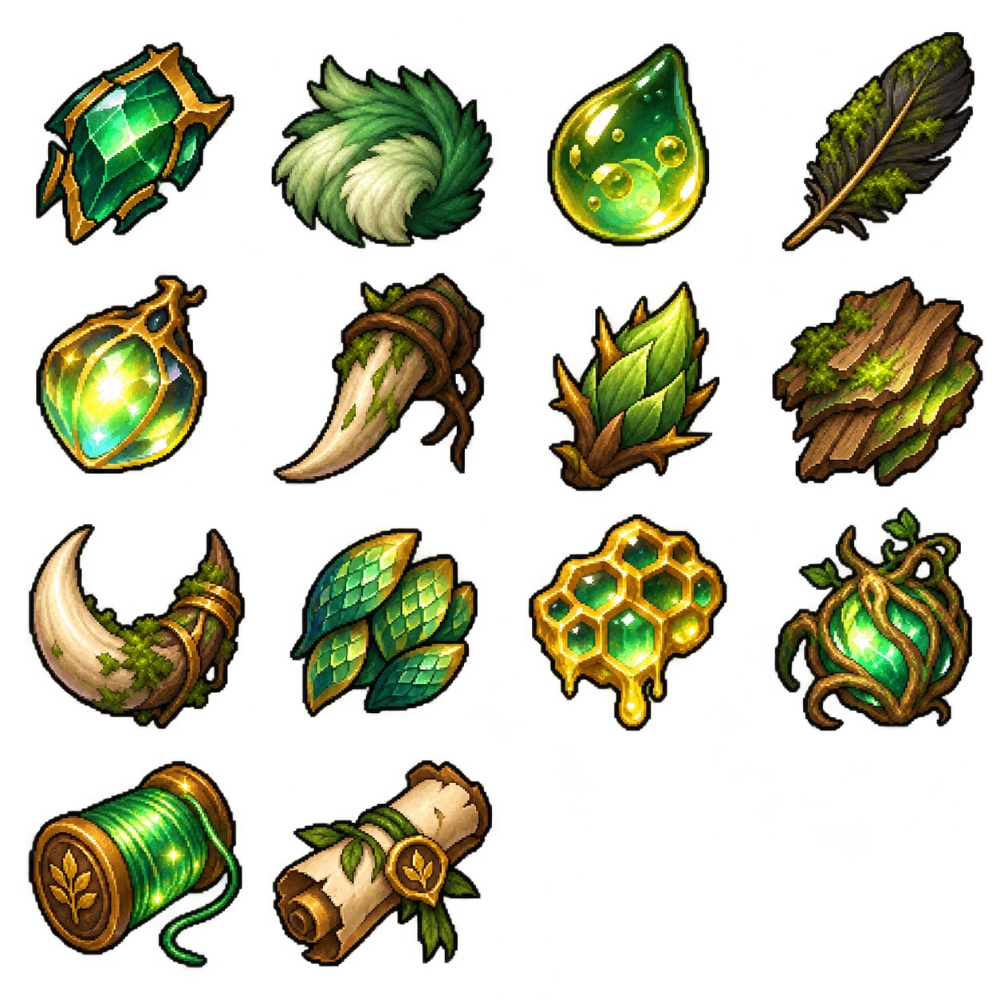
Fragmentos orgânicos, itens botânicos e materiais obtidos nas regiões de floresta e em criaturas naturais.
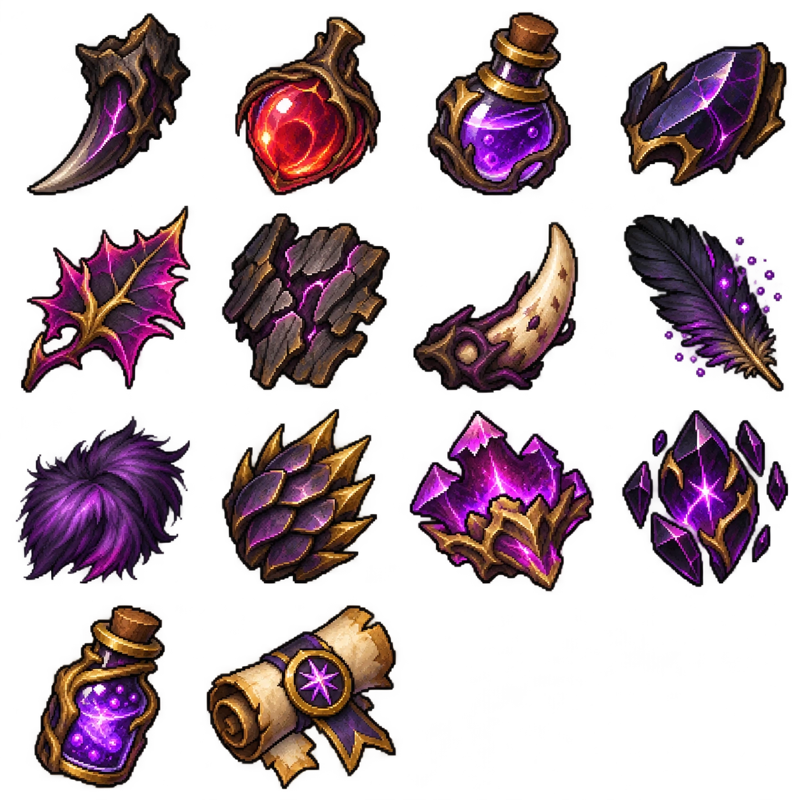
Essências, cristais e fragmentos mágicos usados em armas, acessórios e equipamentos arcanos.
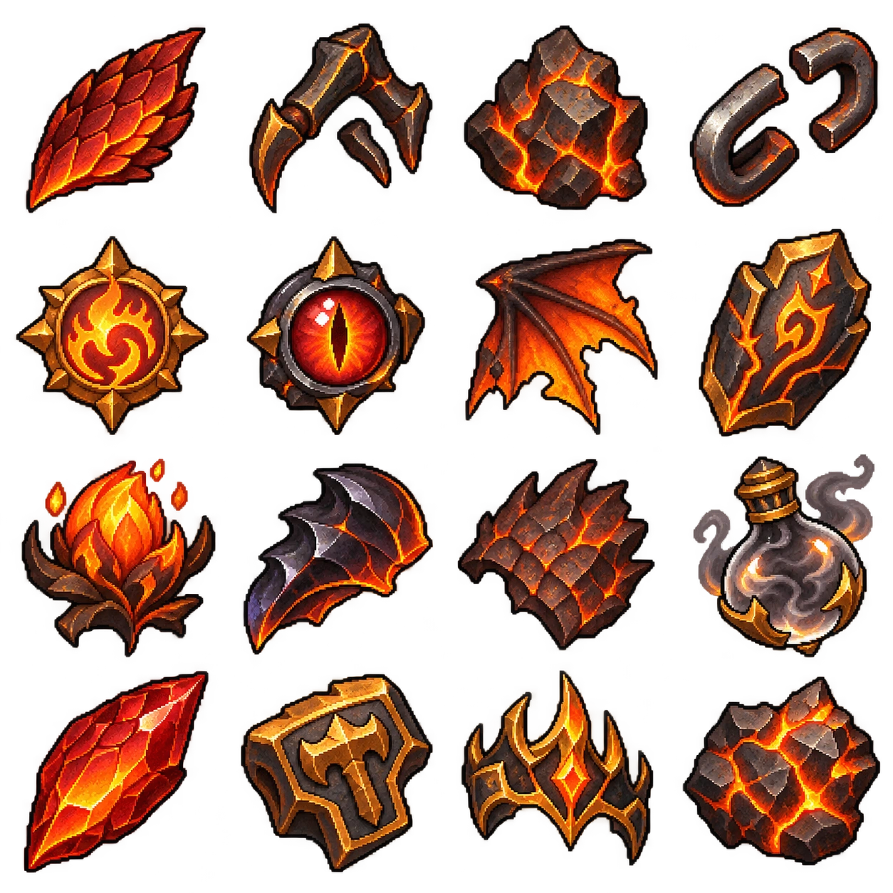
Escória, rochas vulcânicas e componentes aquecidos para receitas ligadas à Forja e ao Cadinho.
Os três novos minichefes raros surgem durante a exploração e deixam materiais exclusivos para a Oficina. Cada um traz movimentos e efeitos próprios. Encontros raros têm 2% de chance por conclusão normal elegível, sem substituir os chefes principais da campanha.
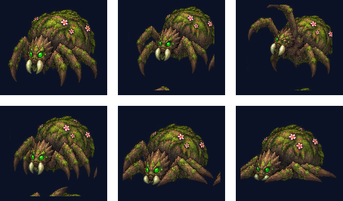
Uma criatura ancestral da floresta, com carapaça coberta de musgo e raízes. A Matriarca surge como ameaça rara do primeiro mundo.
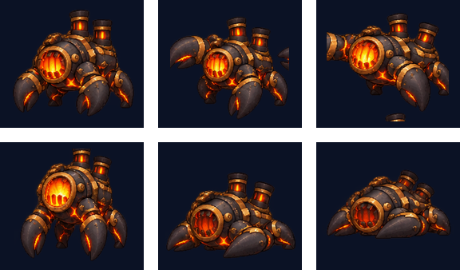
O coração incandescente da nova Oficina. Depois de encontrar os conhecimentos I e II, o Cadinho Vivo aguarda na fase 450; a primeira vitória contra ele concede o conhecimento III.
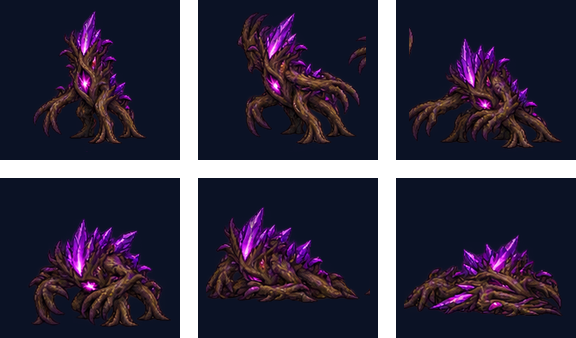
Uma criatura sombria envolta em raízes e cristais violetas. A Espreita acrescenta novos desafios ao segundo mundo.
O trecho final do terceiro mundo ficou mais exigente. Os inimigos comuns e elites das fases 601 a 699 receberam um aumento direto nos atributos de combate.
Os cinco atributos principais aumentaram em 20% neste intervalo de fases. A mudança busca tornar o avanço até o Soberano mais desafiador, valorizando a evolução dos equipamentos e a composição da equipe.
Sem mudanças: Malkor (600), Soberano (700), inimigos fora das fases 601–699, quantidade de inimigos, frequência dos ataques e recompensas. Os ajustes já existentes dos chefes permanecem.
Ajustes de estabilidade e apresentação para manter as batalhas mais consistentes, com atenção especial às animações, à navegação e ao consumo de recursos durante o combate.
A renderização passa a trabalhar com uma meta de até 60 quadros por segundo, evitando a geração desnecessária de quadros acima desse valor em telas de alta taxa de atualização.
Foram realizados ajustes na apresentação dos personagens e dos efeitos para diminuir o trabalho de processamento e reduzir oscilações durante sequências de habilidades.
Correções na consulta à origem dos materiais, na seleção de atributos e no retorno às telas da Oficina tornam o fluxo de fabricação mais claro e consistente.
A estabilidade dos 60 FPS pode variar conforme o aparelho e a versão instalada. Durante os testes, avisem caso o contador ultrapasse esse limite, ocorram quedas perceptíveis ou haja aquecimento excessivo.
Queremos saber como estão funcionando os novos sistemas durante suas partidas. Compartilhem suas impressões sobre a progressão da Oficina, os encontros raros, a fabricação dos equipamentos e as animações dos heróis.
Ao explorar a atualização, estes são os pontos que mais queremos acompanhar:
A Oficina já está disponível para testes, mas seguimos acompanhando o ritmo da economia, a dificuldade das fases 601–699 do Mundo III e a leitura visual dos equipamentos. Os próximos ajustes serão orientados pelos resultados das partidas.